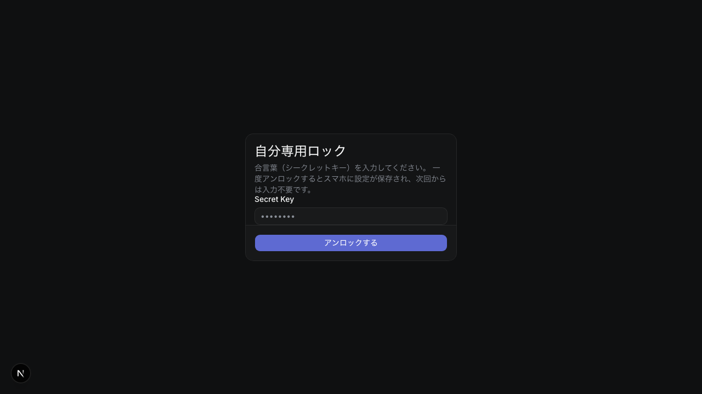
タスク管理PWA（Linearインスパイア）
LinearライクなUIのプロジェクト管理アプリ。Next.js 15のServer Actionsで安全なミューテーション処理を実装し、SupabaseのRow Level Securityで個人データを保護。オフライン対応のPWA設計。
Next.js 15
Supabase
TypeScript
Tailwind CSS
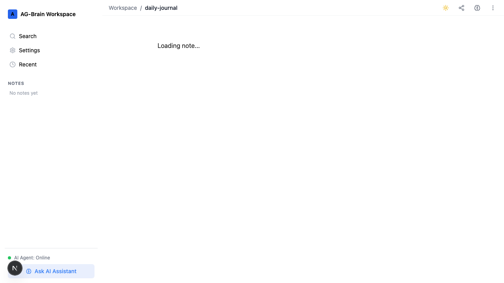
AIナレッジ管理アプリ（Antigravity Brain）
関連ノートをAIが自動提案するメモ・ナレッジ管理アプリ。Framer Motionによるスムーズなアニメーションとタスク自動抽出機能を搭載。日常の思考整理に実運用中。
Next.js
Tailwind CSS
Framer Motion
TypeScript
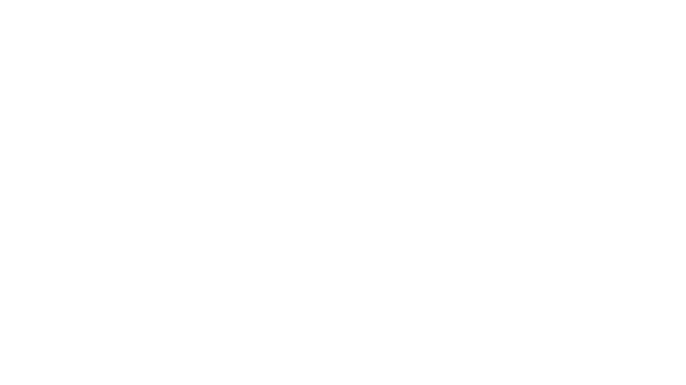
リアルタイム同期マインドマップ
Firestoreリアルタイム同期でマルチデバイス対応のマインドマップPWA。Google認証・差分保存による高速レスポンス。学習・企画の思考整理に活用中。
React
Firebase
Firestore
PWA
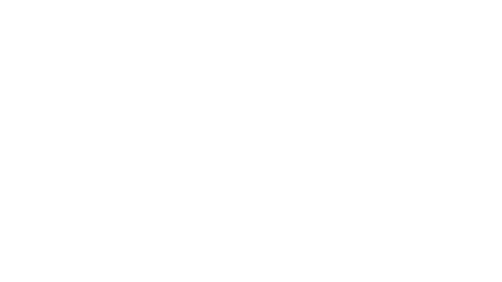
英語フレーズ管理PWA
YouTubeで出会った英語フレーズを登録・管理し、音声付きラジオ形式で復習できるモバイルPWA。Capacitorでスマホアプリとしても動作。学習済みフレーズの除外機能付き。
React
Capacitor
Firebase
TypeScript
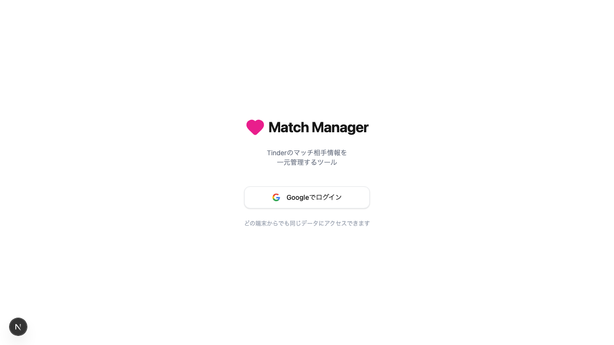
マッチングアプリ相手情報CRM
マッチングアプリ相手のプロフィール・会話内容を一元管理するCRM。AIによるプロフィール分析・チャット要約機能を搭載。複数アプリの情報を横断して把握できる。
Next.js
Firestore
TypeScript
Tailwind CSS
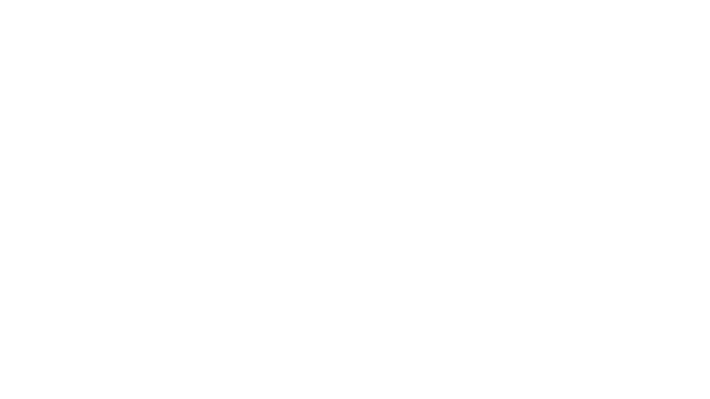
人生OS ダッシュボード（習慣管理・振り返り）
日次習慣チェック・30日ヒートマップ・週次月次レビュー・核12の戒め・40+の人生原則を統合したダッシュボード。吉田松陰やカーネギーの思想を元に設計。LocalStorageで永続化。
HTML5
Vanilla JS
LocalStorage
CSS3

地図ブックマーク管理アプリ
地図上のお気に入りスポットをカスタマイズ・管理するReactアプリ。カテゴリ分類・メモ付き保存でカフェや作業場所の整理に活用。
React
Vite
TypeScript
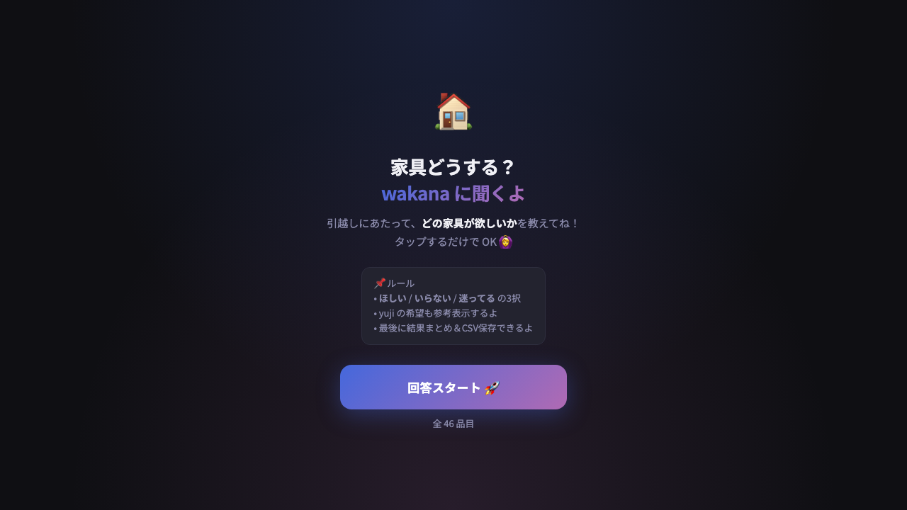
家具処遇アンケート＆集計ツール
引越し時の家具の処遇（持っていく/捨てる/売る等）を家族でアンケート回答し、Next.jsで集計・管理するツール。静的HTMLの回答ページとNext.jsの集計ページで構成。
HTML5
Next.js
TypeScript
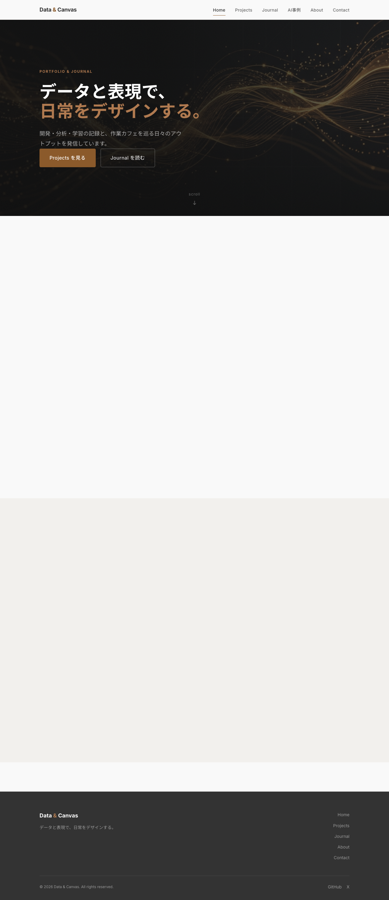
このポートフォリオサイト（Data & Canvas）
今ご覧のこのサイト自体。CSSデザイントークン・モジュール式スタイルシート・タグフィルター付きJournalをVanilla HTML/CSS/JSで構築。GitHub Pages で公開中。
HTML5
CSS3
Vanilla JS
GitHub Pages
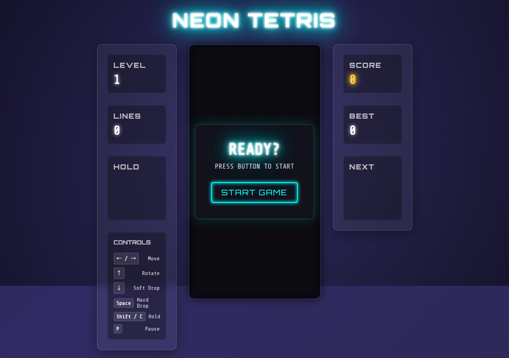
Neon Tetris
グラスモーフィズム＋ネオン照明エフェクトのブラウザテトリス。ホールド機能・次ピース表示・効果音（Web Audio API）・ハイスコア保存対応。タッチ操作でスマホでも動作。
HTML5 Canvas
Web Audio API
Vanilla JS
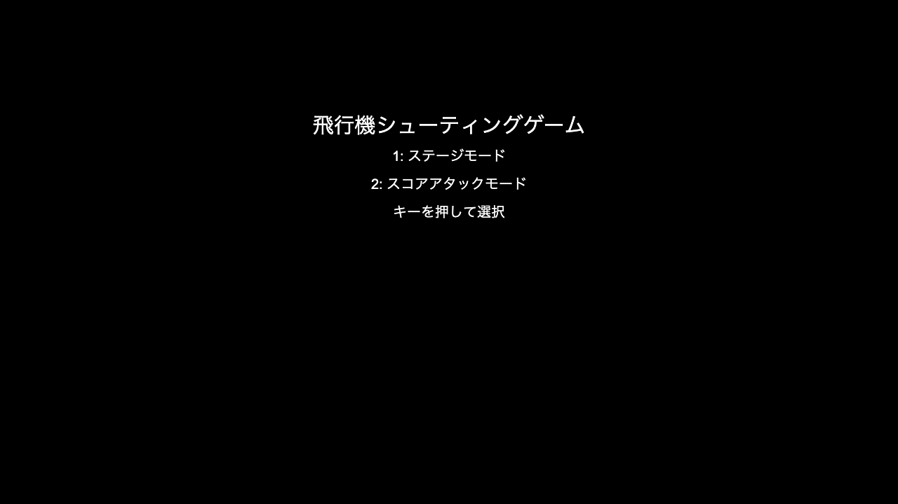
Space Invaders シューティング
HTML5 Canvas で実装したスペースインベーダー系シューティング。ステージモードとスコアアタックモードを搭載。衝突検出・敵パターン設計をAIと共同実装。複数バージョンあり。
HTML5 Canvas
Vanilla JS
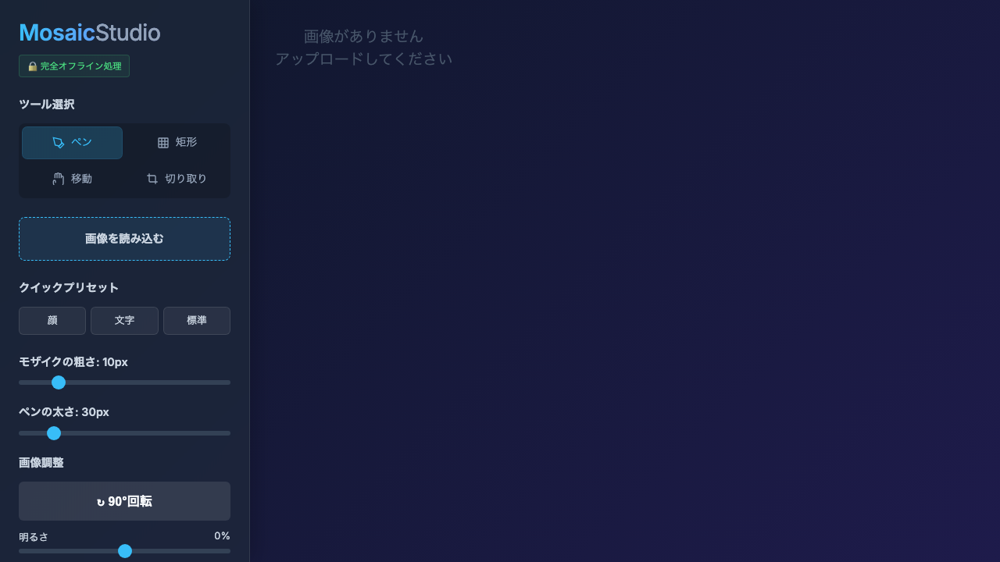
Mosaic Studio（画像モザイク加工ツール）
ブラウザ上でドラッグ&ドロップした画像にモザイクをかけられるツール。モザイクペン・移動・切り取りツール・Undo/Redo・ズーム・明るさ調整・PNG出力対応。EXIF自動補正付き。
HTML5 Canvas
Vanilla JS
EXIF補正
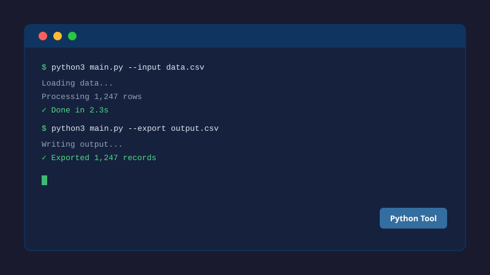
席替え最適化ツール
男女バランス・過去の席被りを考慮した最適席替えを自動生成するStreamlitアプリ。絶対同席禁止ペアの指定も可能。PNG/テキスト/CSV形式で出力。
Python
Streamlit
Pandas
書籍音声化ツール
PDF・テキストファイルをedge-ttsで自然な音声に変換するStreamlitアプリ。長文は適切なチャンクに分割、複数ボイスを選択可能。朝の散歩中に書籍を「聴く」習慣のために開発。
Python
edge-tts
pdfplumber
Streamlit
賃貸物件監視・通知ツール
SUUMO・HOME'S・アットホームの新着物件をPlaywrightで定期監視し、条件に合致した物件をLINE/Slackへ即時通知する自動化ツール。引越し活動中に開発・実運用。
Python
Playwright
LINE API
コミュニティ投稿リアクション分析ツール
リベシティの投稿リアクション数・コメント数をPlaywrightでスクレイピングし、UTF-8 BOM付きCSVで出力するツール。どのコンテンツが反応を集めるかを分析し、発信戦略に活用。
Python
Playwright
Pandas
ユーザー辞書変換スクリプト
macOS標準IMEのユーザー辞書をGoogle IME形式に変換するPythonスクリプト。IME乗り換え時の辞書データ移行を自動化し、手作業でのコピーペーストを一掃。
Python
CSV処理
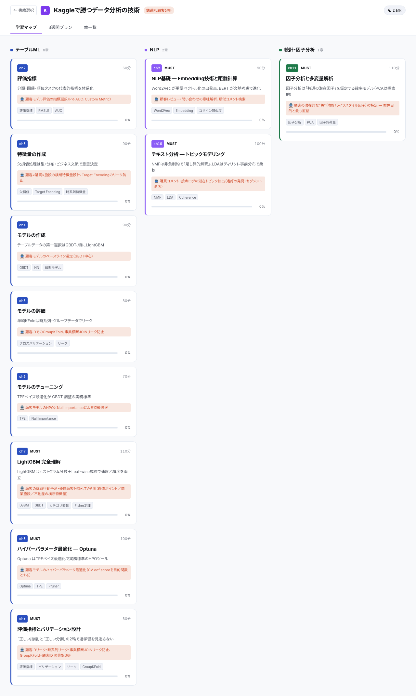
機械学習インタラクティブ教材自動生成システム
JSONファイルを定義するだけでCanvas付きインタラクティブHTML教材を自動生成するPythonシステム。Kaggle・BERT・機械学習入門など3冊12章以上を作成。テキストハイライト・付箋メモ・Gemini連携機能付き。
Python
HTML / Canvas
React CDN
KaTeX
Firebase
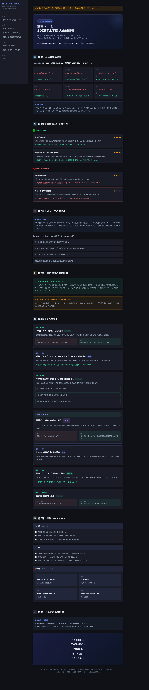
Kindleハイライト→「人生の示唆」7層分析
74冊のKindleハイライト計1,900+件をPythonで構造化し、Claude APIで価値観パターン・横断テーマ・時系列変遷・影の自己など7層に分析。読書から「人生の指針10箇条」と「未解決の問い」を継続的に生成。
Python
Claude API
Obsidian
Firestore
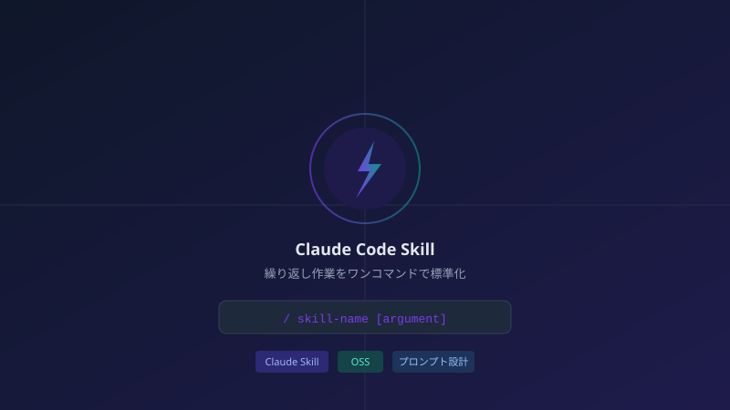
Claude Codeドメインスキル群（5種）
Kindle復習まとめ生成・インタラクティブ教材作成・Markdown解説深掘り・Gemini調査プロンプト生成・リベシティ記事執筆の5スキルを開発。繰り返し作業をワンコマンド化し、品質を標準化。
Claude Skill
Markdown
プロンプト設計
家族・生活管理スキル群（5種）
LINE会話からタスク抽出・テキストから自己分析インサイト抽出・過去の買い物履歴から献立提案・ブロッキング解消・買い物リスト抽出の5スキルをCohabit向けに開発。
Claude Skill
Markdown
プロンプト設計
Claude Codeセキュリティ設定＆フック
危険なgitコマンド（reset --hard / push --force / clean -f / branch -D等）を自動ブロックするBashフック。機密ファイル読み取り禁止・危険コマンド制限のglobal設定と、初心者向けセットアップガイドも作成。
Bash
JSON設定
Markdown
Understand-Anything（OSS）
コード・差分・設計書・オンボーディング・ダッシュボード・会話形式など、あらゆるものを「理解する」ためのユニバーサルスキル集。複数のunderstandスキルをモジュール化して公開。
Claude Skill
OSS
Markdown
mcp_excalidraw（Excalidraw MCP サーバー）
Claude CodeからExcalidrawを直接操作できるMCPサーバー。Claude Codeスキルとして実装し、会話からそのまま図解を生成できるワークフローを構築。OSS として公開。
MCP
Claude Skill
OSS
superpowers（コードレビュー・執筆支援スキル集）
コードレビューの依頼/受け取り・執筆支援の3スキルをまとめたOSSスキル集。レビューコメントの書き方から受け取り方まで、チーム開発のコミュニケーションを標準化する。
Claude Skill
OSS
Markdown